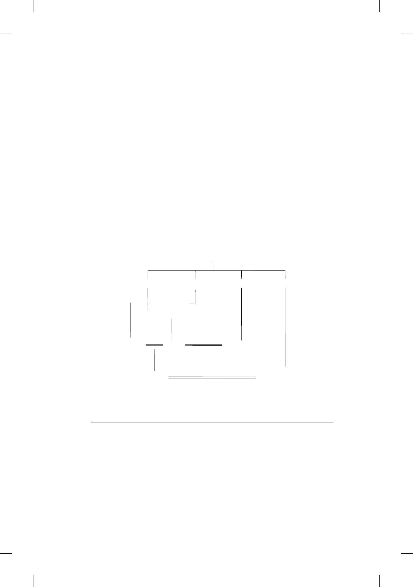

Excursus: Mark and Josephus on John the Baptist 79
Tetrarch (although Luke does in Luke 3:1, but he does not name the first
husband of Herodias!) and whenever Josephus refers to Philip, it is always
Philip the Tetrarch. To make matters worse, Josephus informs us that Philip
the Tetrarch was married to Salome, the daughter of Herodias and Herod
(Antiquities 18:136)! In the light of all this evidence, some scholars who
give pre-eminence to Josephus’s account, think that Mark was confused in
naming Herodias’s first husband as Philip. But this is unwarranted, as first
of all, Herod the Great’s family tree is actually quite complicated. Moreover,
“Herod” can be a personal name or a family name in Josephus’s account.
There is no reason why the first husband of Herodias could not have more
than one name. A simplified family tree of Herod the Great, derived from J.
Marcus, may make all this clear:
133
Diagram 4
Simplified Family Tree of Herod the Great
Herod the Great
reigned 37 – 4 BC
= Mariamne I
died 29 BC
= Mariamne II = Malthrace = Cleopatra
Aristobulus IV = Bernice I
died 7 BC
Herod
(a.k.a Philip;
Mark 6.17)
Herodias
Salome
Herod Antipas
reigned 4 BC – AD 39
Philip the Tetrarch
reigned 4 BC – AD 34
died AD 34
= marriage
What was exactly the reason for John the Baptist’s opposition to Antipas’s
marriage to Herodias (v. 18)? It was not because it entailed Herod’s divorc-
ing his rst wife. Divorces were allowed under Jewish law (Deut 24:1–4).
Nor was it because Herodias, a woman, had initiated divorce proceedings.
She did not have that right under Jewish law, but it was permissible under
133. Marcus 2000: 394.